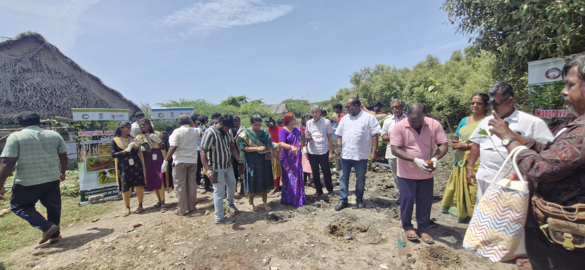
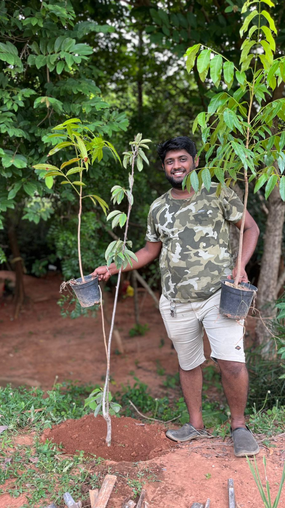
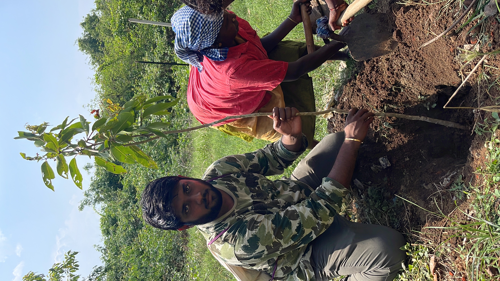
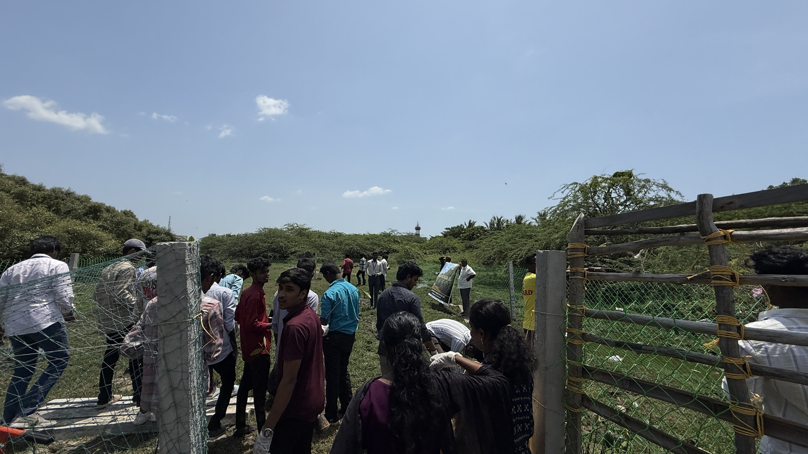

Jeevarasi — The Nature School is a one-of-a-kind educational and experiential park. A Pondicherry-based Trust initiative to bring people closer to the wild, focusing on creating awareness by educating the importance of species in their natural habitat and the need for conservation.
We have collaborated with 200+ schools and NGOs across the globe to spread awareness among students, corporates, entrepreneurs, and enthusiasts. We aim to bring back the age-old reality of safe coexistence between animals and humans.
Preserving exotic plant species from around the world and educating enthusiasts about the need for conservation and protection.
Hands-on learning through observation, touch, feel, and build experiences that reconnect children and adults with nature.


Our interconnected pillars drive awareness, conservation, and safe coexistence between humans and the natural world.
Preserving exotic plant species from around the world that are not found in the Indian subcontinent. Enthusiasts learn about each plant and understand the need for conservation.

Creating awareness programmes across schools, colleges, and corporates. Planting 1,000+ trees each semester and installing nesting boxes for breeding and conservation of species.
Every visit tells a story. Explore our field reports, educational experiences, and conservation journeys from Jeevarasi.
Environment
Jeevarasi — The Nature School was founded as a Pondicherry-based Trust with a vision to bring people closer to the wild through experiential education and conservation.
Read Full Report Education
Education
Our experiential teaching approach helps guests understand conservation better through observation, touch, feel, and build experiences — reconnecting them with nature.
Read Full Report Environment
Environment
Through persistent community action and awareness, we have restored over 200 hectares of land and collected 15+ tonnes of plastic waste across multiple drives.
Read Full Report
Forest
Plastic
Forest
Water

Forest
EducationAt Jeevarasi, we believe in safe coexistence, experiential learning, and measurable conservation impact. Transparency and education guide everything we do.
We aim to bring back the age-old reality of safe coexistence between animals and humans. Every program is designed to foster mutual respect and understanding between species.
Our preferred teaching approach involves observation, touch, feel, and build experiences. We bring back the child's inborn love for nature and open environment curiosity.
Collaborating with 200+ schools and NGOs globally, we spread awareness to students, corporates, entrepreneurs, and enthusiasts at every level.
There are many ways to participate in Jeevarasi's mission — from visiting our sanctuary to volunteering for conservation drives and educational programs.
Experience close interactions with exotic birds, reptiles, mammals, and plants at our nature and pet sanctuary in Pondicherry.
Students and citizen scientists can join our conservation workshops, nature walks, and wildlife research programs.
Join tree-planting drives, clean-up campaigns, and awareness programs. Help us plant 1,000+ trees every semester.
Follow our blog, photo gallery, and stories to track our conservation journey and upcoming events at Jeevarasi.